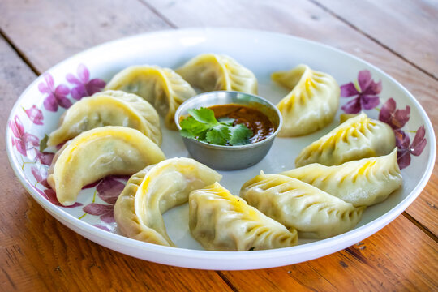

Momo Recipe
Home

Description
Momos are steamed dumplings filled with spiced vegetables or meat, popular in Tibetan and Nepali cuisine. Soft, juicy, and served with a spicy dipping sauce.
Ingredients
- All-purpose flour
- Water
- Cabbage (finely chopped)
- Ginger
- Onion
- Garlic
- Soy sauce
- Green chili (optional)
- Olive Oil
- Salt
- Black Pepper
- Optional: minced chicken or paneer for non-veg/veg filling
Steps
- Prepare the dough by mixing flour, salt, and water; knead until smooth and let it rest.
- Make the filling by sautéing chopped veggies (or meat) with garlic, ginger, soy sauce, and seasoning.
- Roll the dough into small discs and add a spoonful of filling to each.
- Fold and seal the momos into your desired shape (half-moon or pleated).
- Steam the momos for 10–12 minutes until cooked and translucent.
- ENJOY!